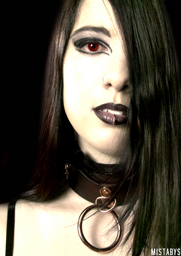

The Rockers combines noise rock and grunge as one of the more spastic all female bands that surfaced in the late 1980s and early 1990s out of Minneapolis, Minn. The group stuck out for lead vocalist and guitarist Kat Bjelland's contrasting doll appearance and aggressive lyrics and singing.
The Rockers gained more traction in the underground scene, although shared similarities to other bands in the "riot grrrl" movement. Their debut full-length album "Spanking Machine" released in 1991 received critical acclaim on independent charts, although their hit single "Bruise Violet" on the follow up album is said to criticize Courtney Love
 Amy Leez is an American singer-songwriter, classically trained pianist and composer. She is the co-founder and lead vocalist of the rock band
Monique Barine (born June 30, 1984),[1] known professionally by her mononym Fantasia, is an American Rock singer, songwriter, actress, guitarist
Sue Ann became a full-time member of Evanescence in June 2003, but had co-written two of their unreleased songs, "October" and "So Close," prior to that. She spent stints with local Little Rock punk bands such as The Visitors and Lucky Father Brown and is currently in the bands Two Spines and American Princes.